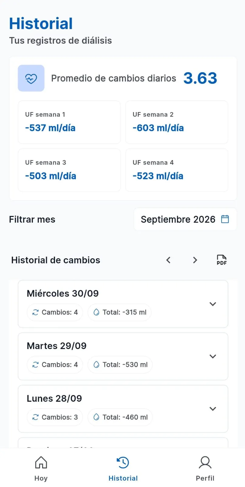
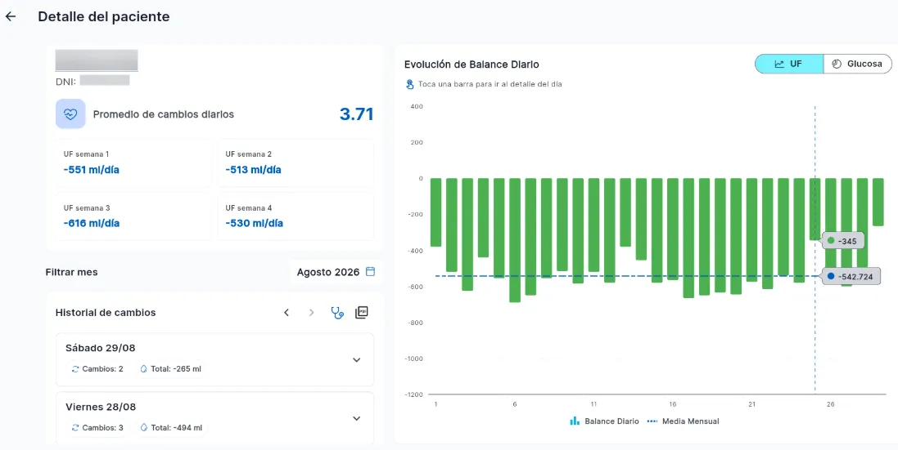
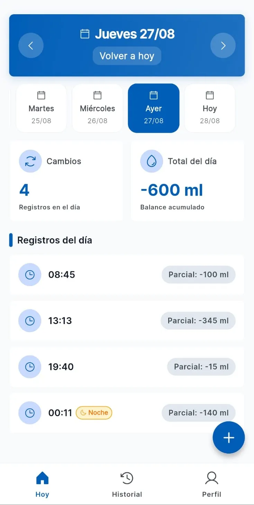
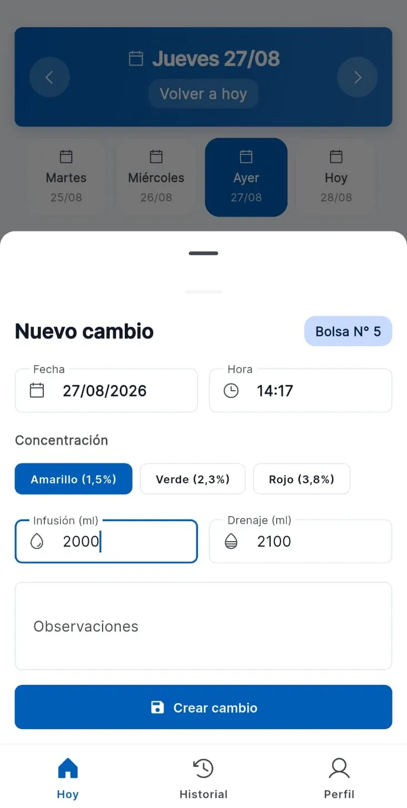
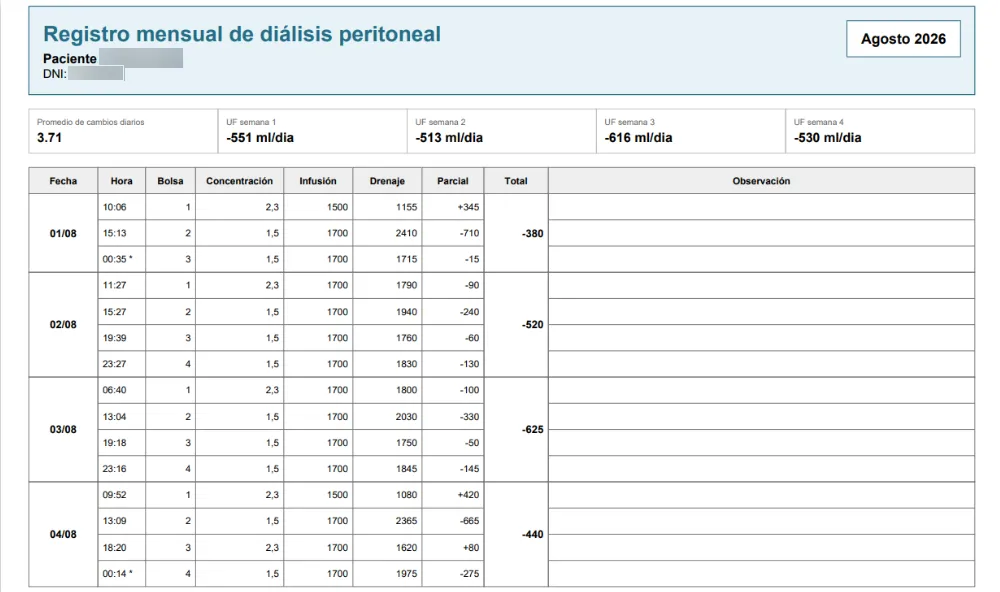

RenApp transforma el registro diario de recambios de diálisis peritoneal en una herramienta simple, trazable y clínicamente útil. Gratuita para el paciente, indispensable para el nefrólogo.
Miles de pacientes registran sus recambios en papel. Los nefrólogos pierden tiempo valioso descifrando datos en cada consulta. Es hora de evolucionar.
Cerrando la brecha entre el cuidado diario en casa y la supervisión clínica experta.
Campos predefinidos de fecha y hora. Cálculo automático de balance parcial sin matemáticas extra.
Acceso a todos los registros ordenados por día, con resúmenes diarios y UF semanales.
Generación de un resumen mensual en PDF idéntico a la planilla física tradicional.
La seguridad de que tus datos están seguros y tu médico puede ver tu evolución al instante.

Visión general de todos tus pacientes vinculados en un solo lugar, con alertas tempranas.
Evolución del balance diario y UF. Detección visual rápida de anomalías o desviaciones.
Descarga de reportes estructurados en PDF listos para integrar al HCE (Historia Clínica Electrónica).
Vincular nuevos pacientes toma segundos mediante códigos únicos de asociación.

Diseñado para ser utilizado todos los días, sin fricciones. Una interfaz que respeta el tiempo del usuario.

La pantalla principal resume tu estado actual de manera elegante. Balance acumulado, recambios del día, e identificación automática de los cambios nocturnos.
Optimizamos el flujo para que cargar datos sea un placer, no una tarea. Tipos de bolsa (Amarilla, Verde, Roja) a un toque de distancia.


RenApp genera automáticamente un PDF mensual estructurado exactamente igual a la planilla física tradicional. Cero curva de aprendizaje para el equipo médico.
Disponible en versión Web (acceso desde cualquier navegador) y app nativa para Android. Completamente gratuita.
mail renapp.soporte@gmail.com